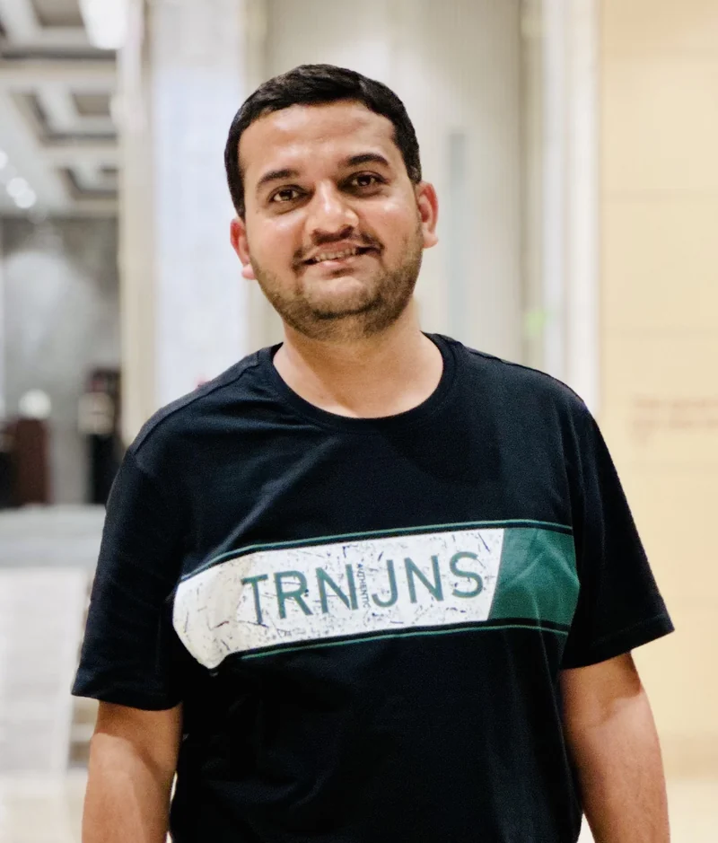

About Me
Researcher, Engineer, and Educator dedicated to intelligent, sustainable, and inclusive technologies.

Dr. Rupendra Pratap Singh Hada
Computer Science PhD • Software Engineer • Academic Scholar
Welcome! I recently completed my PhD in Computer Science from the Indian Institute of Technology Indore (IIT Indore), specializing in Wireless Sensor Networks (WSN), Machine Learning (ML), Internet of Things (IoT), Edge Computing, and Embedded Systems.
My research integrates GPS-free node localisation, energy-efficient routing, and intelligent task scheduling across constrained edge environments. As a Visiting Researcher at the Western Norway Research Institute, I collaborated on sustainable, real-time sensor systems for environmental monitoring.
- Doctorate: PhD (CSE), IIT Indore
- Location: Indore, MP, India
- Email: roodra248@gmail.com
- Phone: +91 8770444377